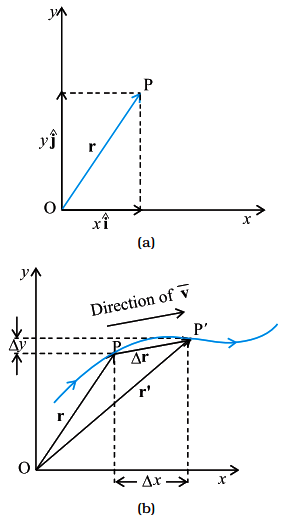
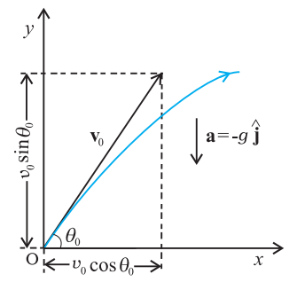
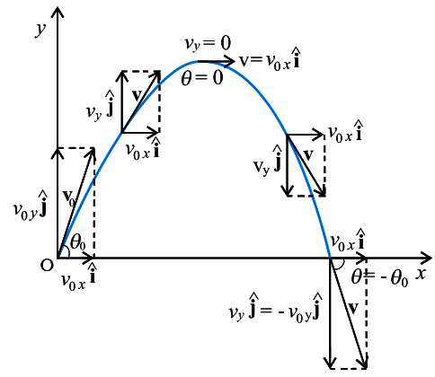
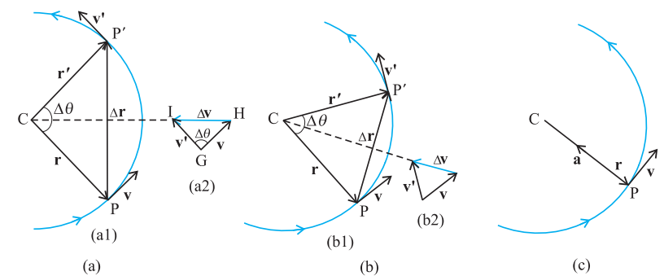

Class 11 · Physics
MOTION IN A PLANE
SCALARS AND VECTORS (MOTION IN A PLANE)
1Definition & Introduction
- Scalar: quantity specified completely by magnitude (number + unit) only.
- Vector: quantity with magnitude and direction, obeying triangle/parallelogram law of addition.
- Magnitude (modulus) of a vector is written as |v| = v (a scalar).
- A vector can be shifted parallel to itself without change (free vector concept).
- In a plane, position is described using a chosen origin O and an ordered pair (x, y).
- Displacement depends only on initial and final positions; path length depends on the actual route.
2 Diagram
In 2D: position vectors r, r′ from origin; displacement
Δr = r′ − r is straight-line P→P′.
3Key Concepts
- •Scalars combine by ordinary algebra; add/subtract only if units match.
- •Vector needs direction + magnitude; direction matters for equality.
- •Vector notation: boldface v (print) or arrow-over-letter v⃗ (handwritten).
- •Triangle/parallelogram laws define vector addition geometrically.
- •Position vector: r = xi + yj; displacement: Δr = r2 − r1.
- •|Δr| ≤ path length; equality only for straight-line motion without reversal.
4VECTOR NOTATION + EQUALITY
- Write vectors as boldface (A) or arrow-over-letter A → .
- Magnitude is scalar: |A| = A; direction is shown by arrowhead.
- Two vectors are equal iff same magnitude and same direction (location irrelevant for free vectors).
- Negative of a vector: (−A) has same magnitude, opposite direction.
5POSITION, DISPLACEMENT, PATH LENGTH
- Choose origin O; if particle at point P(x, y), position vector r = OP.
- If it moves P→P′, displacement Δr = PP′ = r′ − r.
- Path length is distance travelled along the curve; depends on route.
- Always: |Δr| ≤ (path length); can be zero for a round trip (zero vector).
6SCALAR vs VECTOR
| Basis | Scalar | Vector |
|---|---|---|
| Specification | Magnitude only (number + unit) | Magnitude + direction (and obeys vector addition laws) |
| Examples (plane motion) | time, mass, temperature, path length (distance) | displacement, velocity, acceleration, force |
| Addition | Ordinary algebra | Triangle/parallelogram law; components add |
| Equality condition | Same numerical value (with unit) | Same magnitude AND same direction |
| Can it be negative? | Yes (e.g., −5 °C) but no direction implied | Yes; indicates opposite direction relative to chosen reference |
7Formulas
Displacement is change in position vector:
Δr = r′ − r
In components (x–y plane):
r = xi + yj, r′ =
x′i + y′j
Subtract to get component form of displacement:
Δr = ( x′−x )i + (
y′−y )j = Δxi + Δyj
Magnitude of displacement (straight-line distance between points):
|Δr| = √( (Δx)2 +
(Δy)2 )
| r = | position vector OP at time t (m) |
| r′ = | position vector OP′ at time t′ (m) |
| Δr = | displacement vector PP′ (m) |
| Δx, Δy = | changes in coordinates: Δx = x′−x, Δy = y′−y |
| i, j = | unit vectors along +x and +y directions |
Core 2D result (position → displacement)
Δr = Δxi + Δyj,
|Δr| = √( (Δx)2 + (Δy)2 )
8⭐Important Points
- A vector is defined operationally by triangle/parallelogram law of addition.
- Magnitude of a vector is scalar; do not attach direction to |A|.
- Displacement is independent of path; distance (path length) is path-dependent.
- Zero (null) vector has zero magnitude; direction is undefined.
- Equality of vectors: same magnitude and same direction, even if drawn at different places.
9❌Common Mistakes
- Treating distance and displacement as interchangeable in 2D motion problems.
- Adding vector magnitudes directly (e.g., 3 m + 4 m = 7 m) instead of vector addition.
- Writing |Δr| as negative or giving a direction to a scalar magnitude.
- Confusing position vector OP with displacement PP′ when origin changes or is not specified.
10💡Memory Technique
“S-V: Single number vs View (direction)”
11🧮Formula Sheet
Scalar: magnitude only; Vector: magnitude + direction; vectors obey
triangle/parallelogram law.Vector notation: boldface A or
arrow-over-letter A⃗; magnitude |A| = A.r =
xi + yj (position vector in plane).Δr =
r′ − r = Δxi + Δyj.|Δr| = √(
(Δx)2 + (Δy)2 ).Path length ≥ |Δr|;
equality only for straight-line motion.
EQUALITY OF VECTORS
1Definition & Introduction
- Two vectors A and B are equal iff they have same magnitude and same direction.
- Equality is written as A = B; it does not depend on where the arrows are drawn (for free vectors).
- If one has same length but different direction, vectors are unequal (like A′ and B′ in Fig. 3.2(b)).
- To test equality, shift one vector parallel to itself (no rotation) so tails coincide; then heads must coincide too.
- In most kinematics problems, vectors are treated as free vectors; their parallel shift leaves them unchanged.
- In some applications, location/line of action matters; such vectors are localised vectors (not freely shiftable).
2 Diagram
Vectors are equal after a parallel shift if both tails and tips coincide
(Fig. 3.2 concept).
3Key Concepts
- 📏Equal vectors: same magnitude (length) and same direction (arrow orientation).
- 🧲Parallel shift test: translate a vector without rotation; equality is checked by tail & head coincidence.
- 🆓Free vector: can be moved parallel anywhere; only magnitude and direction define it.
- 📍Localised vector: point/line of application is important (e.g. forces in rigid-body problems).
- ↗️Same length alone is insufficient: A′ and B′ can be equal-length yet unequal due to direction.
4HOW TO CHECK A = B (PARALLEL-SHIFT TEST)
- Check lengths: if |A| ≠ |B|, vectors are unequal immediately.
- If lengths match, slide B parallel to itself so its tail meets A's tail.
- If the heads coincide after the slide, directions are identical ⇒ A = B.
- If heads do not coincide, directions differ ⇒ vectors are unequal (case of A′, B′).
5FREE VECTORS vs LOCALISED VECTORS (WHY LOCATION MAY MATTER)
- Free vector: defined only by magnitude + direction; can be moved anywhere by parallel translation.
- In particle motion/kinematics, displacement, velocity, acceleration are treated as free vectors.
- Localised vector: point/line of application matters; shifting can change physical effect.
- Typical example: a force on a rigid body; shifting the line of action can change torque.
6FREE VECTOR vs LOCALISED VECTOR
| Basis | Free vector | Localised vector |
|---|---|---|
| Defined by | Magnitude + direction only | Magnitude + direction + line/point of application (as required by the situation) |
| Parallel shift effect | No change in the vector | May change the physical outcome |
| Used commonly in | Kinematics of a particle (displacement, velocity) | Rigid-body mechanics (forces causing rotation) |
| Equality check | Same magnitude and direction (location irrelevant) | Same magnitude and direction, and same line of action (and same point of application if specified) |
7⭐Important Points
- Vector equality means same magnitude + same direction; not merely same length.
- A parallel shift does not alter a free vector; rotation would change direction and hence the vector.
- Notation: A = B indicates equality of vectors, not just equality of magnitudes.
- If two vectors are equal, their components along any axis are equal.
- Direction must be exactly same (angle 0°), not anti-parallel.
8❌Common Mistakes
- Saying vectors are equal when only magnitudes match (ignoring direction).
- Allowing rotation during the shift test; only parallel translation is allowed.
- Confusing equal vectors with vectors having same starting point (start point is irrelevant for free vectors).
- Treating all forces as free vectors in rigid-body questions; line of action can matter.
9💡Memory Technique
“Mnemonic: MSD for equality”
10📌Quick Recap
Equality condition: A = B ⇔ same magnitude and same
direction.Parallel shift rule (free vectors): shifting a vector parallel to
itself leaves it unchanged.Same length but different direction ⇒ vectors
unequal (e.g. A′ ≠ B′).Free vector: location irrelevant;
Localised vector: line/point of application may matter.
SCALAR MULTIPLICATION (VECTORS)
1Definition & Introduction
- Multiplying a vector A by a real number λ gives a new vector λA with scaled magnitude.
- If λ > 0: direction of λA is same as A; magnitude becomes λ|A|.
- If λ < 0: direction of λA reverses; magnitude becomes |λ||A|.
- If λ = 0: 0A is the zero (null) vector with magnitude 0; direction undefined.
- λ can carry physical dimensions; then dim(λA) = dim(λ)·dim(A) (e.g., Δr = vt for constant velocity in a straight line).
2 Diagram
Multiplying by a positive scalar stretches/shrinks; a negative scalar also
reverses direction.
3Key Concepts
- 📏Magnitude rule: |λA| = |λ| |A| for any real λ.
- ➡️Sign rule: λ>0 keeps direction; λ<0 reverses direction.
- 🧊Dimension rule: multiplying by a dimensional scalar changes the physical quantity type.
- 🧷Zero vector facts: A + 0 (zero vector) = A, and 0A = 0 (zero vector).
4SIGN EFFECTS (DIRECTION) + SIZE
- For λ>0: λA is colinear with A and points the same way.
- For λ<0: λA is colinear but points opposite to A.
- If |λ|>1, vector stretches; if 0<|λ|<1, vector shrinks.
- Special cases: 1A=A, (−1)A=−A, 0A=0.
5DIMENSIONAL MEANING (PHYSICS USE)
- If λ has units, λA represents a different physical vector quantity.
- Example (constant velocity, straight-line motion): Δr = v t, where t is a scalar time interval.
- Units check: (m s−1)×(s) = m, so v t has displacement units.
6Effect of scalar λ on vector A
| Case | Magnitude of λA | Direction of λA |
|---|---|---|
| λ > 0 | |λA| = λ|A| | Same as A |
| λ < 0 | |λA| = (−λ)|A| = |λ||A| | Opposite to A |
| λ = 0 | |0A| = 0 | Undefined (zero vector) |
7Formulas
Start with magnitude scaling for positive scalar (definition).
If λ > 0, then |λA| = λ|A|
For negative scalar, write λ = −|λ|; direction flips but magnitude stays
positive.
If λ < 0, then λA = (−|λ|)A so |λA| =
|λ||A|
Combine both cases into one compact rule.
|λA| = |λ| |A| (for any real λ)
Dimensional consequence when λ has units.
dim(λA) = dim(λ)·dim(A)
| A = | Given vector (magnitude |A|, some direction) |
| λ = | Real scalar multiplier (may be dimensionless or have units) |
| |A| = | Magnitude (length) of vector A |
| 0 = | Zero (null) vector with magnitude 0; no defined direction |
| dim( ) = | Physical dimensions (e.g., L, T) |
Most important result
|λA| = |λ| |A| and sign of λ decides direction
8⭐Important Points
- Direction changes only due to sign of λ; size changes due to |λ|.
- Do not write |λA| = λ|A| unless you also state λ>0.
- Zero vector arises from 0A or from A + (−A); direction is not defined.
- Scalar λ may be dimensionless (pure scaling) or dimensional (creates new physical quantity).
- Vector scaling keeps the vector colinear with A for any real λ.
9❌Common Mistakes
- Using |λA| = λ|A| even when λ is negative.
- Assigning a direction to the zero (null) vector 0.
- Forgetting that λ can have units, so λA may represent a different quantity.
- Treating λA as a scalar; it is still a vector (except it becomes the zero vector when λ=0).
10💡Memory Technique
“SIGN-ARROW RULE”
11🧮Formula Sheet
|λA| = |λ| |A|If λ>0: direction
same; if λ<0: direction opposite0A = 0 (zero vector), and
|0|=0A + 0 (zero vector) = Adim(λA) = dim(λ)·dim(A)Physics example: Δr = v t for
constant velocity in a straight line
GRAPHICAL VECTOR OPERATIONS
1Definition & Introduction
- Graphical vector addition: place vectors head-to-tail; the resultant joins the first tail to the last head.
- Triangle (head-to-tail) method gives the sum R = A + B as the third side of a triangle.
- Parallelogram method: draw A and B from a common tail; the diagonal from the common tail gives the resultant.
- Vector subtraction is defined using a negative vector: A − B = A + (−B).
- Zero (null) vector 0 has magnitude 0; its direction is not defined.
2 Diagram
Same resultant R is obtained by triangle (head-to-tail) and
parallelogram methods.
3Key Concepts
- ➡️Head-to-tail: shift vectors parallel to themselves; only magnitude and direction matter (free vectors).
- 🔁Commutative: A + B = B + A (same resultant vector).
- 🧩Associative: (A + B) + C = A + (B + C) (grouping doesn’t change sum).
- ➖Subtract by reversing: −B has the same magnitude as B but opposite direction.
- ⭕Additive identity: A + 0 = A; inverse: A + (−A) = 0.
4HOW TO DRAW (EXAM-SAFE STEPS)
- Choose a convenient scale (example: 1 cm = 2 N) and use the same scale in the whole diagram.
- Triangle: draw A; from its head draw B; R joins first tail to last head.
- Parallelogram: draw A and B from the same tail; complete the parallelogram; diagonal is R.
- Arrow of R is from the start point (common/first tail) to the final point (last head).
5SUBTRACTION & ZERO VECTOR
- Construct −B by reversing the direction of B without changing its length.
- Then A − B is the head-to-tail sum of A and −B.
- If the final head coincides with the initial tail, the resultant is 0 (null vector).
- 0 has |0| = 0, so its direction is undefined; it acts as additive identity.
6Triangle vs Parallelogram Method (Graphical Addition)
| Basis | Triangle (head-to-tail) | Parallelogram |
|---|---|---|
| How to place vectors | Tail of B at head of A | Tails of A, B at same point |
| Resultant drawn as | First tail → last head | Diagonal from common tail |
| Best used when | Adding many vectors sequentially | Adding exactly two vectors from a point |
| Common output | Same R as parallelogram | Same R as triangle |
7⭐Important Points
- In head-to-tail addition, the resultant connects the first tail to the last head.
- A vector can be shifted parallel to itself without change (free vector).
- Triangle and parallelogram methods give the same sum for two vectors.
- Vector addition is commutative and associative; vector subtraction is not commutative.
- Zero vector has zero magnitude; its direction cannot be specified.
8❌Common Mistakes
- Drawing the resultant from head to tail (wrong arrow direction).
- For A − B, subtracting lengths instead of adding −B graphically.
- Changing a vector’s length while reversing it to make a negative vector.
- Changing the scale mid-diagram, giving a wrong magnitude for the resultant.
9💡Memory Technique
“TAIL-TO-HEAD: "THEN JOIN"”
10📌Quick Recap
Triangle law (head-to-tail): resultant joins first tail to last
head.Parallelogram law: diagonal from the common tail gives the
sum.Commutative: A + B gives the same resultant as B +
A (same start and end points).Associative: chaining vectors in
different groups gives the same overall resultant.Subtraction idea: A −
B means add A and −B graphically.Null/zero vector:
produced when initial and final points coincide; magnitude 0, direction undefined.
VECTOR RESOLUTION
1Definition & Introduction
- Vector resolution is expressing a vector as the sum of component vectors along specified directions.
- In a plane, any vector A can be written as A = la + μb for two non-collinear vectors a, b.
- Along rectangular axes, components are taken along perpendicular unit vectors î, ĵ (and k̂ in 3D).
- Components can be positive, negative, or zero depending on the vector’s direction.
- A vector can be specified either by (A, θ) or by (Ax, Ay).
2Diagram
Resolving A into perpendicular components Ax and
Ay along x- and y-axes.
3Key Concepts
- 🧩Component vectors add vectorially: A = Axî + Ayĵ (+ Azk̂).
- 📏Trigonometric links (2D, θ from +x-axis): Ax = Acosθ, Ay = Asinθ.
- 🧠Recover magnitude and angle: A = √(Ax²+Ay²). For direction use correct quadrant (best: θ=atan2(Ay,Ax)).
- 🧱General resolution along non-perpendicular directions: A = la + μb (find l, μ from geometry/components).
- 🎯Unit vectors have magnitude 1 and specify direction only: |î|=|ĵ|=|k̂|=1.
4 RESOLUTION ALONG ANY TWO DIRECTIONS (NON-COLLINEAR)
- Choose two non-zero, non-parallel vectors a and b in the same plane.
- Construct a line through tail of A parallel to a, and a line through head of A parallel to b (they meet at a point).
- Then A = la + μb; l, μ are real numbers (can be negative).
- If a ⟂ b and are unit vectors, then l and μ are the scalar components along those directions (equal to Ax, Ay for standard x–y axes).
5RESOLUTION ALONG COORDINATE AXES (UNIT-VECTOR FORM)
- In 2D: A = Axî + Ayĵ.
- If θ is measured from +x-axis: Ax = Acosθ, Ay = Asinθ.
- Magnitude: A = √(Ax²+Ay²). Direction: use correct quadrant (atan2 preferred).
- In 3D: A = Axî + Ayĵ + Azk̂ and A = √(Ax²+Ay²+Az²).
6SPECIFYING A 2D VECTOR: MAGNITUDE–ANGLE vs COMPONENTS
| Basis | A, θ form | Ax, Ay form |
|---|---|---|
| Given data | Magnitude A and direction θ from +x-axis | Signed projections on axes |
| Convert to components | Ax=Acosθ Ay=Asinθ |
Already known |
| Convert to magnitude–angle | Already known |
A=√(Ax²+Ay²) tanθ=Ay/Ax (choose correct quadrant; preferably use atan2) |
| Sign & quadrant | θ decides signs of components | Use signs of Ax, Ay to choose correct θ |
7Formulas
From right-triangle formed by dropping perpendiculars to axes (vector makes angle
θ with +x-axis):
Ax=Acosθ,
Ay=Asinθ
Square and add components to eliminate θ:
Ax²+Ay²=A²(cos²θ+sin²θ)=A²
Hence magnitude and direction relations:
A=√(Ax²+Ay²),
tanθ=AyAx (quadrant must be chosen correctly)
tanθ=AyAx (quadrant must be chosen correctly)
Unit-vector (component vector) form in 2D:
A=Axî+Ayĵ
Resolution along any two non-collinear directions in a plane:
A=la+μb
| A = | Vector (or its magnitude when written as A without arrow/bold), same units as components |
| Ax, Ay, Az = | Signed scalar components of A along x, y, z axes |
| î, ĵ, k̂ = | Unit vectors along +x, +y, +z directions (dimensionless) |
| θ = | Angle made by A with +x-axis in x–y plane (take correct quadrant) |
| l, μ = | Real numbers multiplying direction vectors a, b in general resolution |
Core 2D resolution
A=Axî+Ayĵ, where
Ax=Acosθ, Ay=Asinθ
8⭐Important Points
- Components are scalars; component vectors are Axî, Ayĵ.
- Always state the angle reference: usually measured from +x-axis, anticlockwise positive.
- Signs of components follow projection direction; do not force all components positive.
- Magnitude uses squares, so sign disappears in √(Ax²+Ay²).
- For direction from components, choose the correct quadrant using signs of Ax, Ay.
9❌Common Mistakes
- Writing A = Ax + Ay (adding scalars) instead of vector sum with unit vectors.
- Interchanging sin and cos when θ is given with a different reference axis.
- Using tan−1(Ay/Ax) without correcting for quadrant.
- Treating î, ĵ as numbers and dropping them in final vector form.
10💡Memory Technique
“COS-TO-AXIS, SIN-TO-PERP”
11🧮Formula Sheet
A=la+μb (resolution along two
non-collinear directions)A=Axî+Ayĵ
(+Azk̂)Ax=Acosθ,
Ay=Asinθ (for θ from +x-axis)A=√(Ax²+Ay²); direction: use correct quadrant
(atan2 preferred)|î|=|ĵ|=|k̂|=1 (unit vectors)
ANALYTICAL VECTOR ADDITION
1Definition & Introduction
- Analytical vector addition means adding vectors by adding their x-, y- (and z-) components.
- Write each vector in unit-vector form: A = Axi + Ayj (+ Azk).
- Resultant components: Rx = Ax + Bx, Ry = Ay + By (similarly Rz).
- Magnitude from components: R = √(Rx² + Ry²) (2D) or √(Rx² + Ry² + Rz²) (3D).
- Direction in 2D: tanθ = RyRx; choose quadrant using signs of Rx, Ry.
2 Diagram
Head-to-tail gives R = A + B; analytically add components along axes.
3Key Concepts
- 🧩Component method works for any number of vectors: add each axis separately.
- ➖Subtraction: A − B = A + (−B); components subtract correspondingly.
- 📐If two magnitudes and included angle θ are known, use cosine law for resultant.
- 🧭 Angle with +x axis: tanα = B sinθ A + B cosθ
4WORKING (COMPONENT METHOD)
- Resolve: Ax = AcosθA, Ay = AsinθA (angle from +x).
- Add: Rx = ΣAx, Ry = ΣAy (and Rz similarly).
- Magnitude: R = √(Rx² + Ry²) in 2D; include Rz² in 3D.
- Direction: θR from +x using tanθR = Ry/Rx; check quadrant by signs.
5WHEN COSINE/SINE LAWS ARE FASTER (TWO VECTORS)
- If A, B and included angle θ are known: R² = A² + B² + 2ABcosθ.
- Angle α between R and A: sinα = (Bsinθ)/R (sine law; side opposite α is B).
- Equivalent tangent form: tanα = BsinθA + Bcosθ.
- Use components if angles are given w.r.t. axes or vectors are more than two.
6COMPONENT METHOD vs COSINE/SINE LAW
| Basis | Component method | Cosine/Sine law |
|---|---|---|
| Best for | Many vectors; axis-given angles; 2D/3D | Exactly two vectors; included angle known |
| Core idea | Add corresponding components | Treat as triangle/parallelogram geometry |
| Direction | tanθR = Ry/Rx | If triangle formed by A, B, R: sinα = (Bsinθ)/R where θ is angle between A and B, α is angle between R and A |
| Common risk | Wrong quadrant/signs | Using wrong angle (not included angle) |
7Formulas
Write vectors in components (2D):
A = Axi +
Ayj, B = Bxi +
Byj
Add and regroup unit vectors:
R = A + B = (Ax +
Bx)i + (Ay + By)j
So components add axis-wise:
Rx = Ax + Bx,
Ry = Ay + By
Magnitude from Pythagoras (2D):
R = √(Rx² +
Ry²)
Direction from right-triangle definition:
tanθR = RyRx
| A, B, R = | Magnitudes of vectors A, B, resultant R |
| Ax, Ay, (Az) = | Cartesian components of A along x, y (and z) |
| i, j, k = | Unit vectors along +x, +y, +z axes |
| θ = | Angle between two vectors (cosine/sine laws) or from +x axis (components), as stated |
| θR = | Angle made by resultant with +x axis |
| α = | Angle between R and A (triangle method; opposite side B) |
Most important result
R = (ΣAx)i + (ΣAy)j (+
(ΣAz)k)
8⭐Important Points
- Use one reference: angles from +x, counterclockwise positive.
- Component addition applies to displacement, velocity, force, momentum.
- For subtraction, reverse: −B has same magnitude, opposite direction.
- tanθ alone is ambiguous; always apply quadrant correction.
- Cosine law needs included angle between A and B.
9❌Common Mistakes
- Swapping sin/cos for x- and y-components.
- Missing negative signs in 2nd/3rd/4th quadrants.
- Using √(A²+B²) when vectors are not perpendicular.
- Reporting direction from tanθ without quadrant correction.
10💡Memory Technique
“ADD: Axes → Add → Diagonal”
11🧮Formula Sheet
A = Axi + Ayj (+
Azk)R = A + B ⇒
Rx = Ax + Bx, Ry =
Ay + By, Rz = Az +
BzR (2D) = √(Rx² +
Ry²); R (3D) = √(Rx² + Ry² +
Rz²)tanθR = RyRx (quadrant by
signs of Rx, Ry)Ax =
Acosθ, Ay = Asinθ (θ from +x)Law
of cosines (two vectors): R² = A² + B² + 2ABcosθLaw of sines (triangle of A, B, R): sinαB = sinθR = sinβA
Vectors in a plane: r, Δr, v, a and their x–y components;
v is tangent to path
KINEMATICS IN TWO DIMENSIONS
1Definition & Introduction
- Motion in a plane is described using vectors: position r, displacement Δr, velocity v, acceleration a.
- Position vector: r = xi + yj, where x,y are coordinates in an x–y frame.
- Displacement: Δr = r′ − r = (Δx)i + (Δy)j; depends only on endpoints, not path.
- Average velocity: vavg = Δr/Δt; direction is same as Δr.
- Instantaneous velocity: v = dr/dt = (dx/dt)i + (dy/dt)j; direction is tangent to trajectory.
- Acceleration: a = dv/dt = (dvx/dt)i + (dvy/dt)j; need not be along v.
2 Diagram

At any point, r gives position from origin; Δr joins endpoints;
v is along tangent to path.
3Key Concepts
- 📍Components: treat plane motion as simultaneous x- and y- motions with shared time t.
- ➡️Speed is scalar: v = √(vx²+vy²); different from |Δr|/Δt for curved paths.
- 🧵Tangent rule: as Δt→0, chord PP′ becomes tangent; v points along tangent.
- 🧩Direction angle: tanθ = vy/vx; use quadrant from signs of vx,vy.
- 🧨Acceleration components: ax = dvx/dt, ay = dvy/dt; vector change of v matters.
4COMPONENT FORM (MOST USED IN EXAMS)
- Position: r = xi + yj.
- Displacement: Δr= (Δx)i+(Δy)j.
- Velocity: v = dr/dt = vxi + vyj, with vx=dx/dt, vy=dy/dt.
- Speed: v = √(vx²+vy²); direction: tanθ = vy/vx.
- Acceleration: a = dv/dt = axi + ayj, with ax=dvx/dt, ay=dvy/dt.
5GEOMETRIC INTERPRETATION (TANGENT IDEA)
- Average velocity points along chord: vavg ∥ Δr for a finite Δt.
- Instantaneous velocity: as Δt→0, chord becomes tangent; hence v is tangent to trajectory.
- Acceleration depends on change of velocity vector (magnitude and/or direction), not on path alone.
- In 2D, v and a can make any angle between 0° and 180°.
6AVERAGE vs INSTANTANEOUS (VECTOR VIEW)
| Basis | Average (over Δt) | Instantaneous (at time t) |
|---|---|---|
| Definition | vavg = Δr/Δt, aavg = Δv/Δt | v = dr/dt, a = dv/dt |
| Direction | Along displacement chord PP′ | Along tangent at the point (for v) |
| How to compute | Use endpoints (x,y) at t and t′ | Differentiate x(t), y(t) |
| Depends on | Overall change in position/velocity | Local behavior at that instant |
7Formulas
Start from position vector in plane
r(t) = x(t)i + y(t)j
Displacement between t and t′
Δr = r(t′) − r(t) = (Δx)i +
(Δy)j
Average velocity then limit Δt→0
vavg = ΔrΔt ⇒ v = drdt
Differentiate component-wise
v = dxdti + dydtj
Acceleration as time-derivative of velocity
a = dvdt = dvxdti + dvydtj
| r = | Position vector from origin (m) |
| x, y = | Coordinates/components of r (m) |
| Δr = | Displacement vector (m) |
| vx, vy = | Velocity components (m s−1) |
| ax, ay = | Acceleration components (m s−2) |
| θ = | Angle made by v with +x-axis (use quadrant by signs) |
Core result (2D kinematics in components)
v = drdt = dxdti + dydtj, a = dvdt = dvxdti + dvydtj
8⭐Important Points
- Use vectors: r, Δr, v, a; write each in i,j component form.
- Displacement depends on initial and final position only; path length can be larger than |Δr|.
- Instantaneous velocity is tangent to trajectory; it is not generally along Δr for finite intervals.
- Compute v and a by differentiating x(t), y(t) separately: vx=dx/dt, ax=d²x/dt².
- Direction requires signs of components; report angle with correct quadrant.
9❌Common Mistakes
- Mixing up speed (v) with velocity vector v; speed has no direction.
- Using tanθ = vx/vy (inverted) or ignoring quadrant when θ is negative.
- Writing v = (Δx/Δt)i + (Δy/Δt)j for instantaneous without taking limit/differentiating.
- Assuming a is always tangent to path; only v is tangent.
10💡Memory Technique
“RVD: Right order, Via derivative, Direction”
11🧮Formula Sheet
r = xi + yjΔr =
r′ − r = (Δx)i + (Δy)jvavg =
Δr/Δtv = dr/dt = (dx/dt)i +
(dy/dt)jspeed v = √(vx² +
vy²), tanθ = vy/vxa = dv/dt = (dvx/dt)i +
(dvy/dt)jax = d²x/dt²,
ay = d²y/dt²
Vector equations + component form; perpendicular components evolve independently
CONSTANT ACCELERATION IN PLANE
1Definition & Introduction
- Motion in a plane with constant acceleration means a is time-independent (vector constant).
- Use vectors: r(t) for position, v(t) for velocity, a for acceleration.
- Core results: v = v0 + at, and r = r0 + v0t + 12at2.
- In x–y plane: treat as two simultaneous 1D motions along perpendicular axes.
- Independence: x-motion depends only on v0x, ax; y-motion depends only on v0y, ay.
2 Diagram

At any point, r gives position from origin; Δr joins endpoints; v is along tangent to path.
3Key Concepts
- ➡️Vector kinematics: write one equation for r, then read components.
- 🧩Superposition: 2D motion = sum of two perpendicular 1D motions.
- ⏱️Same time t appears in x and y equations; that couples the trajectory.
- 📌If a is constant, x(t), y(t) are quadratic; v(t) is linear.
4DERIVATION (VECTOR → COMPONENTS)
- Start from definitions: a = dv/dt and v = dr/dt.
- If a is constant, integrate dv/dt = a to get v = v0 + at.
- For constant a, average velocity: vavg = v+v02.
- Use r−r0 = vavgt and substitute v = v0 + at to get r = r0 + v0t + 12at2.
- Project on axes: r = xî + yĵ, v = vxî + vyĵ, a = axî + ayĵ.
5INDEPENDENCE OF PERPENDICULAR MOTIONS (EXAM FAVORITE)
- x-equations use only (x0, v0x, ax); y-equations use only (y0, v0y, ay).
- Changing v0x or ax does not directly change y(t), and vice-versa.
- Trajectory is obtained by eliminating t between x(t) and y(t); that mixes them mathematically.
- Special case: projectile has ax=0, ay=−g (not covered in detail here).
6Vector form vs Component form (same physics)
| Basis | Vector equations | Component equations (x, y) |
|---|---|---|
| Velocity update | v = v0 + at |
vx=v0x+axt vy=v0y+ayt |
| Position update | r = r0 + v0t + 12at2 | x=x0+v0xt+12axt2 y=y0+v0yt+12ayt2 |
| Independence statement | One vector law; components follow automatically | Solve x(t) and y(t) separately; combine using same t |
7Formulas
Definitions:
a = dv/dt, and v =
dr/dt
For constant a, integrate from 0 to t:
v−v0 = at ⇒ v =
v0 + at
For constant a, average velocity:
vavg = v+v02
Displacement using r−r0 = vavgt:
r−r0 = v+v02t
Substitute v = v0 + at:
r = r0 + v0t
+ 12at2
| r, r0 = | position vector at time t, and at t=0 (m) |
| v, v0 = | velocity vector at time t, and at t=0 (m s−1) |
| a = | constant acceleration vector (m s−2) |
| x, y = | coordinates/components of r along x and y (m) |
| vx, vy = | components of velocity (m s−1) |
| ax, ay = | components of acceleration (m s−2) |
Master equation (use, then resolve)
r = r0 + v0t + 12at2
8Graph
For constant acceleration, v–t is a straight line; slope = a.
9⭐Important Points
- Always start from vector laws; component equations are direct projections on axes.
- For constant a, v(t) is linear and r(t) is quadratic in t.
- Independence: solve x(t) and y(t) separately; then use same t to combine.
- Trajectory: eliminate t between x(t), y(t); the path can be a parabola if one acceleration is zero.
- Units check: v0t is m; at2 is m; consistent addition required.
10❌Common Mistakes
- Using different times for x and y parts (must use the same t).
- Forgetting initial coordinates (x0, y0) when origin is not the start.
- Mixing up v and speed |v|; speed is always non-negative.
- Dropping the 12 in displacement term 12at2.
11💡Memory Technique
“Mnemonic: "VRA 1-2"”
12🧮Formula Sheet
v = v0 + atr = r0 + v0t + 12at2vx=v0x+axt,
vy=v0y+aytx=x0+v0xt+12axt2y=y0+v0yt+12ayt2|v| = √(vx2+vy2)
2D motion with ax=0 and ay=−g → parabolic
trajectory
PROJECTILE MOTION (UNDER GRAVITY)
1Definition & Introduction
- Projectile: body projected with initial speed v0 at angle θ0, then moves only under gravity (air resistance neglected).
- Acceleration components: ax=0, ay=−g (constant).
- Horizontal and vertical motions are independent but share the same time t.
- x(t) is uniform motion; y(t) is uniformly accelerated motion downward.
- Eliminating time gives a parabolic path in the x–y plane.
2 Diagram

Projectile launched at angle; path is parabola with constant horizontal velocity and downward acceleration.
3Key Concepts
- 🧭Resolve: v0x=v0cosθ0, v0y=v0sinθ0
- ➡️Horizontal: vx=v0cosθ0 (constant), so x∝t
- ⬇️Vertical: vy=v0sinθ0−gt, so motion is symmetric about the top (for level ground).
- ⛰️At top: vy=0 ⇒ tup=v0sinθ0g
- 📏Range on level ground: R=v0² sin2θ0g; maximum at θ0=45°.
4EQUATIONS (COMPONENT FORM)
- Choose origin at launch; x-axis horizontal, y-axis upward; take g=9.8 m s−2 unless stated.
- x(t)=(v0cosθ0)t; vx=v0cosθ0 (constant).
- y(t)=(v0sinθ0)t−12gt2; vy=v0sinθ0−gt.
- Speed: v=√(vx2+vy2); direction tanθ=vyvx.
5RESULTS ON LEVEL GROUND (LAUNCH & LAND AT SAME HEIGHT)
- Time to top: tup=v0sinθ0g; total time of flight: T=2tup=2v0sinθ0g.
- Maximum height: Hmax=(v0sinθ0)22g.
- Range: R=(v0cosθ0)T=v02 sin2θ0g.
- Same range for complementary angles: R(θ)=R(90°−θ) since sin2θ=sin(180°−2θ).
6HORIZONTAL vs VERTICAL MOTION (PROJECTILE)
| Basis | Horizontal (x) | Vertical (y) |
|---|---|---|
| Acceleration | ax=0 | ay=−g |
| Velocity | vx=v0cosθ0 (constant) | vy=v0sinθ0−gt |
| Displacement | x=(v0cosθ0)t | y=(v0sinθ0)t−12gt2 |
| Nature | Uniform motion | Uniformly accelerated motion |
7Formulas
Start with component equations (origin at launch).
x=(v0cosθ0)t,
y=(v0sinθ0)t−12gt2
y=(v0sinθ0)t−12gt2
Eliminate t using t=xv0cosθ0.
y=xtanθ0−g2v02cos2θ0x2
For level ground, set y=0 at landing to get time of flight and range.
T=2v0sinθ0g,
R=(v0cosθ0)T=v02 sin2θ0g
R=(v0cosθ0)T=v02 sin2θ0g
| v0 = | initial speed (m s−1) |
| θ0 = | launch angle from +x-axis (rad or °) |
| g = | acceleration due to gravity (≈9.8 m s−2, downward) |
| T = | time of flight (s) for same launch/landing height |
| Hmax = | maximum height above launch point (m) |
| R = | horizontal range on level ground (m) |
Trajectory (parabola) and range
y=xtanθ0−g2v02cos2θ0x2,
R=v02 sin2θ0g
R=v02 sin2θ0g
8⭐Important Points
- Projectile assumptions: only gravity acts; neglect air resistance; g constant and vertical.
- Always resolve along x (horizontal) and y (vertical); then use 1D kinematics separately.
- Trajectory is parabola in x–y plane (after eliminating t).
- On level ground: ascent time = descent time; vx same at all times.
- Maximum range occurs at 45° for given v0 and g (level ground).
9❌Common Mistakes
- Using ay=+g while taking y upward; sign mismatch ruins results.
- Assuming v is constant; only vx is constant, not total speed.
- Applying R=v02 sin2θg when landing height differs from launch height.
- Forgetting sin2θ uses double angle (2θ), not (sinθ)2.
10💡Memory Technique
“X-UNO, Y-UAG”
11🧮Formula Sheet
ax=0, ay=−gv0x=v0cosθ0,
v0y=v0sinθ0x=(v0cosθ0)ty=(v0sinθ0)t−12gt2vy=v0sinθ0−gtHmax=(v0sinθ0)22gT=2v0sinθ0g
(level ground)R=v02
sin2θ0g (level ground)
Constant speed on a circle; acceleration is always towards the centre
UNIFORM CIRCULAR MOTION (UCM)
1Definition & Introduction
- Uniform circular motion: motion along a circle of radius R with constant speed v.
- Velocity changes continuously because its direction changes; hence acceleration is non-zero.
- Acceleration is centripetal (radially inward), perpendicular to instantaneous velocity.
- Angular displacement Δθ is measured at the centre; one round corresponds to 2π rad.
- Angular speed ω is constant in UCM; linear speed relates as v = Rω.
2 Diagram

In UCM: v is tangent, ac is radial inward; both magnitudes constant but v direction changes.
3Key Concepts
- 🎯Centripetal acceleration: ac points to centre; magnitude constant for UCM.
- 🧭Instantaneous velocity is tangential; ac is radial ⇒ always perpendicular.
- ⏱️Time variables: period T (one revolution), frequency n = 1/T.
- 🔁Angular links: ω = 2π/T = 2πn, and ac = ω2R.
4CENTRIPETAL ACCELERATION (WHY NON-ZERO?)
- Even if speed is constant, changing direction means velocity changes ⇒ acceleration exists.
- For small turn Δθ, change in velocity magnitude ≈ vΔθ (vector tip moves on circle).
- Magnitude: ac = v2R; direction always towards centre.
5ANGULAR VARIABLES & TIME RELATIONS
- Angular speed: ω = ΔθΔt (rad s−1); in UCM, ω is constant.
- Linear–angular link: v = Rω; larger radius needs larger v for same ω.
- Period: T = time for 2π rad; frequency: n = 1/T (Hz).
- Hence ω = 2πT = 2πn and ac = ω2R.
6Tangential vs Centripetal (Radial) Quantities in UCM
| Basis | Tangential (along tangent) | Centripetal / Radial (towards centre) |
|---|---|---|
| Direction | Along motion at that instant | Towards centre (inward) |
| Vector symbol | v | ac |
| Relation | v = Rω | ac = v2R = ω2R |
| Mutual angle | Perpendicular to radius | Along radius |
| Changes in UCM | Magnitude constant; direction changes | Magnitude constant; direction changes |
7Formulas
Speed is constant: in time Δt, particle turns by Δθ so velocity
direction changes by Δθ.
Δv ≈ vΔθ
Divide by time and use ω = Δθ/Δt.
a = ΔvΔt ≈ vΔθΔt = vω
Using v = Rω gives standard centripetal forms.
ac = vω = v2R =
ω2R
| R = | Radius of circular path (m) |
| v = | Speed (m s−1) |
| θ, Δθ = | Angular position / angular displacement (rad) |
| ω = | Angular speed (rad s−1) |
| T = | Time period (s) |
| n = | Frequency (Hz = s−1) |
| ac = | Centripetal acceleration magnitude (m s−2) |
Core result (UCM)
ac = v2R =
ω2R (towards centre)
8⭐Important Points
- Uniform circular motion has constant speed but non-zero acceleration due to changing direction.
- ac is always towards centre and perpendicular to instantaneous v.
- Use radians: 1 revolution = 2π rad; do not mix degrees in formulas unless converted.
- Key links: v = Rω, ω = 2π/T = 2πn, ac = v2/R = ω2R.
- If R increases at fixed v, ac decreases; at fixed ω, ac increases with R.
9❌Common Mistakes
- Saying acceleration is zero because speed is constant (ignores direction change of velocity).
- Using ac = v/R (missing one v). Correct: v2/R.
- For rpm problems, forgetting to convert rpm → Hz before using ω = 2πn.
- Taking ac along tangent; actually it is radial inward (tangential acceleration is zero in UCM).
10💡Memory Technique
“R-ω-v-a chain: "ROVA"”
11🧮Formula Sheet
ω = ΔθΔt (uniform ⇒ constant
ω)v = RωT = 2πωn = 1Tω =
2πnac = v2R = vω =
ω2R (direction: centre)